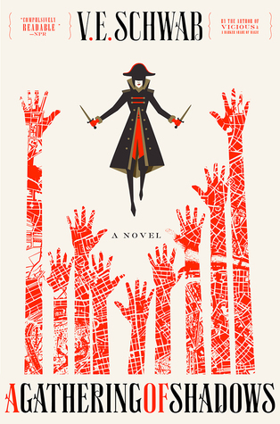

"A Gathering of Shadows"
- Read on 2024-11-18
- Rating: ️️️️️
- Format: 🎧 (16 hours 9 minutes)
While I was somewhat disappointed by shifted focus of this book (and it being around a tournament, as opposed to something... I don't know - maybe more unique?), I still enjoyed the character development, and story. There's no question I'll be diving into the third book in this series.
- Prior: The Lincoln Highway
- Next: The Gift of Influence